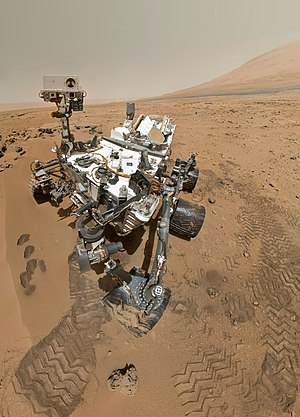

☰
Home
About
Guest-book
PlayGround
계산기
챗봇
화성 탐사
우주상식
게임
큐리오시티와 함께 떠나는 화성 여행

카메라:
Front Hazard Avoidance Camera
Rear Hazard Avoidance Camera
Mast Camera
Chemistry and Camera Complex
Mars Hand Lens Imager
Mars Descent Imager
Navigation Camera
SOL:
SOL 이란?
SOL이란 curiosity가 화성에 도착하고 난 후 지난 날짜를 의미합니다.
데이터 가져오기